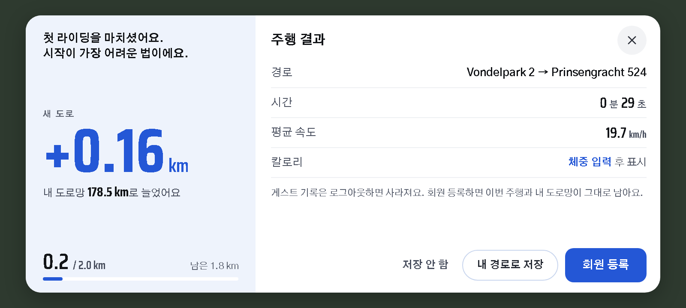
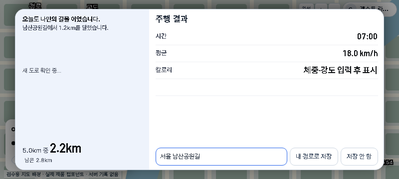
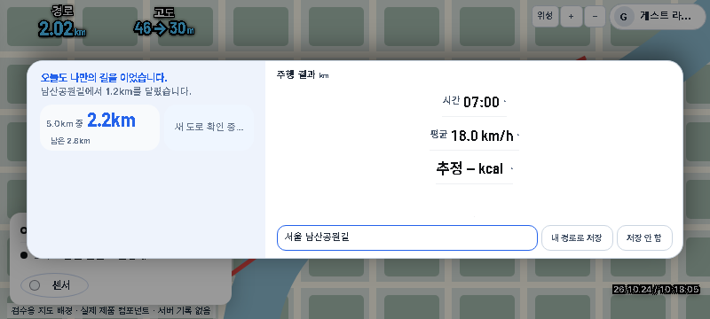
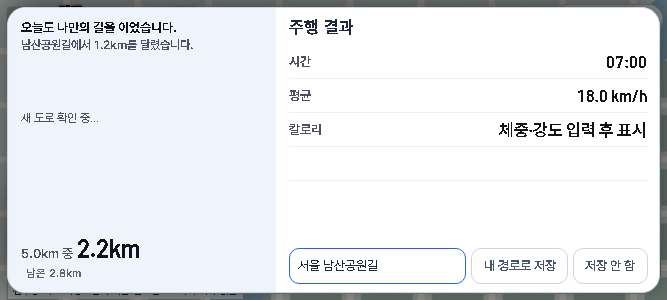
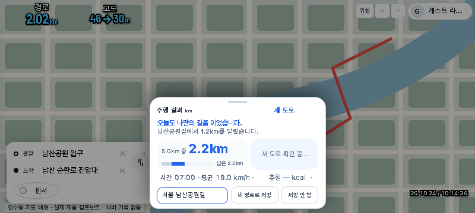
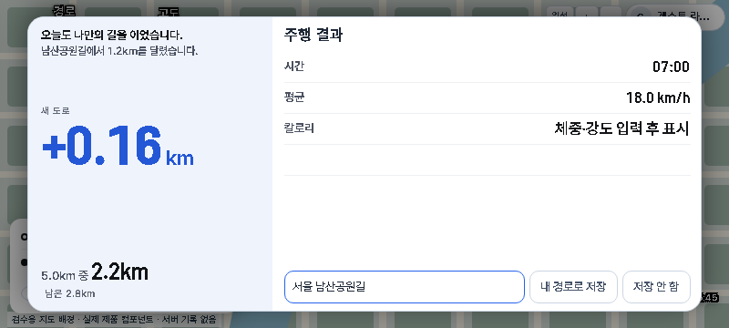
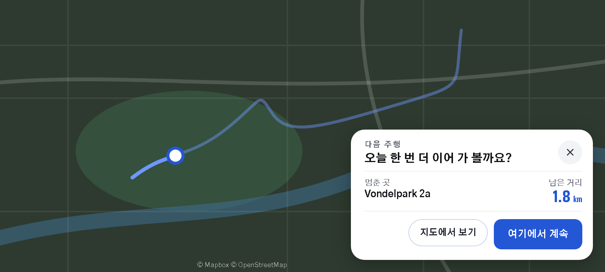
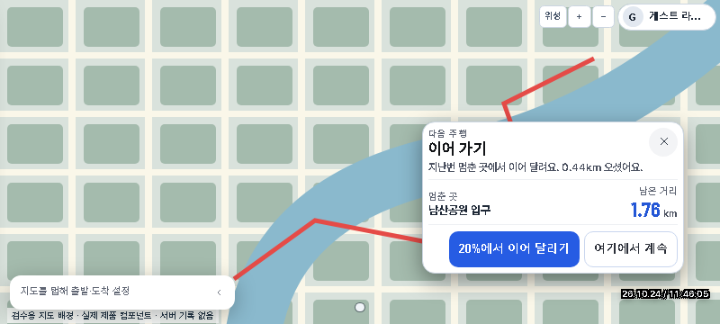
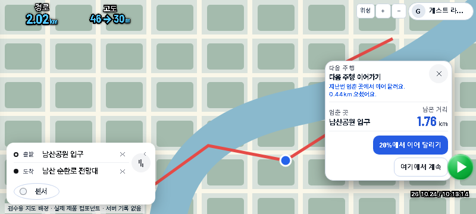
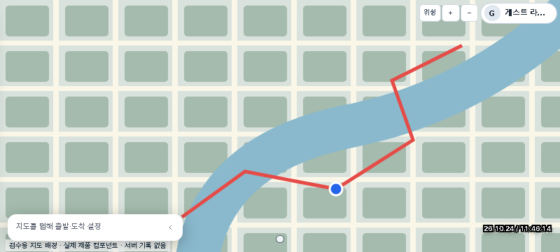

주행 결과 · 다음 주행 (묶음3 · 지시30 보완)
승인 시안(10·11)과 harness 프리뷰 실제 컴포넌트 캡처. 최종 after는 evidence/batch3-final/. 감리 FAIL 당시 캡처는 evidence/batch3/에 보존.
주행 결과
시안 10-Summary
제품 · after 800×360 (final)
감리 FAIL after 800×360 (기록)
final 667×300
before 800×360
확정 새 도로 fixture 800×360
다음 주행
시안 11-NextRide
이어달리기 after 800×360 (final)
감리 FAIL resume 800×360 (기록)
끝점 연장 after 800×360 (final)
보완: 가로 판 CSS를 conquest·progress 기본 규칙 뒤로 옮겨 cascade 정리. 왼쪽 스토리 13px·새 도로·진행 26px 위계, 오른쪽 지표 전폭 행·제목 17px. 다음 주행 카드 폭 320px·제목/스토리 중복 제거·멈춘 곳은 지명만(없으면 「마지막 종료 지점」)·버튼 한 줄. 프리뷰 nextride 는 idle·센서 주행바만(Go 없음), callback 카운터로 e2e 검증.
의도된 차이: 일반 summary harness 는 conquest 확정 전이면 「새 도로 확인 중…」만 표시(허위 +N 없음). 양수 검증은 after-summary-positive-*·ui-redesign-batch3-conquest.spec.ts.
묶음2 비교 ·
주행 결과 프리뷰 ·
다음 주행(이어달리기) 프리뷰